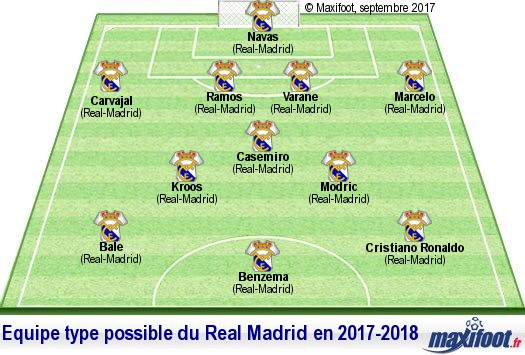

Le Football un sport collectif d'exception un peu de détermination et beaucoup de rigueur.
Le football est un sport collectif qui oppose deux équipes de onze joueurs chacune sur un terrain. L’objectif est de marquer plus de buts que l’adversaire en envoyant le ballon dans le but adverse, principalement à l’aide des pieds, mais toutes les parties du corps peuvent être utilisées sauf les bras et les mains (à l’exception du gardien de but dans sa surface).Le football se joue avec un ballon et possède beaucoup de règles, définies par l’IFAB. Une rencontre se déroule en général en deux mi-temps de 45 minutes, séparées par une pause.
Ce sport demande à la fois des capacités techniques (contrôles, passes, tirs, dribbles), des capacités physiques (endurance, vitesse, coordination) et des compétences tactiques (organisation défensive, transitions, circulation du ballon). Le football implique aussi de la commuunication, coopération, respect des règles et fair-play qui sont indispensables pour jouer.Il existe deux coups francs le direct, on peut tirer directement au but et le indirect, le ballon doit être touché par un autre joueur avant de pouvoir marquer.
Il y a pénalty si un joueur fais faute dans sa surface. On vois aussi sur le terrain un arbitre central, assisté de deux arbitres de touche pour le respect des règles, les fautes, les buts et pour mettre les sanctions.

Le site de la Ligue A
Pour le collectif il faut communiquer tout en restant souder. Etre ensemble dans le pressing la défense, etc...
Vidéo pour s'améliorer.Un site d'exellent marériel
Pour éviter les blessures, il est essentiel de s’échauffer correctement, de porter des protège-tibias, d’avoir des chaussures adaptées, et de respecter les règles du jeu. Une bonne hydratation, un repos suffisant, et des exercices de renforcement musculaire réduisent aussi les risques. Le fair-play et le contrôle de ses gestes contribuent à un jeu plus sûr.
| Balise | Rôle |
|---|---|
<body> |
définie le corps de la page html |
<head> |
Entête de la page, non affichée |
<h1> |
Titre principal |
<h2> |
Titre moins important |
<p> |
Paragraphe |
<a> |
Fermer les balises |
id |
Attribut du langauage html |
href |
Cible du lien |
img |
Image |
src |
Source de l'image |
alt |
Alternatif |
<ul> |
Liste non ordonnée d'éléments |
<li>
| Garder les balises | <title> |
Texte dans l'onglet du navigateur |
<tabl> |
Tableau |
<td> |
cellule du tableau |
<tr> |
Nouvelle ligne du tableau |